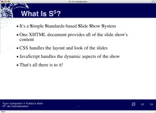
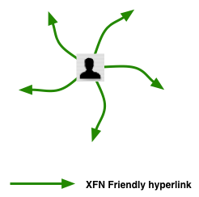
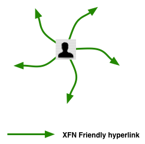

Du Makefile au Rakefile
Utilisation de Ruby pour des tâches d'administration système
Farzad Farid
Pragmatic Source
Qui suis-je ?
«The human brain starts working the moment you are born
and never stops until you stand up to speak in public. »
Sir George Jessel
- Expert Open Source
- Plus système que développement
- Ex Python-addict
- Maintenant Ruby fan
- Partisan de la simplication et de l'automatisation des tâches d'administration
- Essaie d'appliquer des principes et recettes agiles dans le conseil et l'intégration
Présentation du contexte (1)
Ce que le client a aujourd'hui :
- Serveur de message et annuaire sur base Debian Linux
- Serveur IMAP Cyrus IMAP 2.1.14 (vieux !)
- Annuaire OpenLDAP 2.0.23 (vieux !!)
- Debian 3.1 (antédéluvien..)
Présentation du contexte (2)
Extensions sauvages du schéma LDAP
diff -ur schema/core.schema ../../../isis/ldap/schema/core.schema --- schema/core.schema 2002-02-08 18:38:54.000000000 +0100 +++ ../../../isis/ldap/schema/core.schema 2007-10-15 10:31:04.000000000 +0200 @@ -1,3 +1,6 @@ +# Objectclass 'person' a ete modifier pour prendre en compte l attribut +# usergroup pour gerer les differents droits d acces a la base ldap sur l 'intra +# # $OpenLDAP: pkg/ldap/servers/slapd/schema/core.schema,v 1.7.2.18 2002/02/08 17:38:54 kurt Exp $ # # OpenLDAP Core schema @@ -369,7 +379,7 @@ objectclass ( 2.5.6.6 NAME 'person' SUP top STRUCTURAL MUST ( sn $ cn ) - MAY ( userPassword $ telephoneNumber $ seeAlso $ description ) ) + MAY ( userPassword $ telephoneNumber $ seeAlso $ description $ intragroup) ) objectclass ( 2.5.6.7 NAME 'organizationalPerson' SUP person STRUCTURAL MAY ( title $ x121Address $ registeredAddress $ destinationIndicator $
Présentation du contexte (3)
Ce que le client veut :
- Serveur Debian Linux 4.0 (bon ok, déjà un peu vieux...)
- Serveur IMAP Cyrus IMAP 2.2.13
- Annuaire OpenLDAP 2.3.30
Problèmes
- Il faut réinstaller un serveur complet, avec LDAP, SMTP et IMAP
- OK, facile
- Il faut refaire le schéma LDAP
- OK, facile
- Il faut transférer toutes les boîtes mail
- Hum.. OK, pas trop difficile
- Il faut convertir et standardiser tout le contenu de l'annuaire
- ARGH !!
- => Il va falloir écrire un logiciel de conversion/nettoyage.
Quel langage utiliser ?
Solutions possibles :
- Solution 1 : Shell
- Trop de programmes à enchaîner
- Stockage temporaire et traitement des données difficiles
- Il faudra de toute façon écrire des portions dans un langage de plus haut niveau
- NON
Quel langage utiliser ?
Solutions possibles :
- Solutions 2
-
#:: ::-| ::-| .-. :||-:: 0-| .-| ::||-| .:|-. :|| open(Q,$0);while(<Q>){if(/^#(.*)$/){for(split('-',$1)){$q=0;for(split){s/\| /:.:/xg;s/:/../g;$Q=$_?length:$_;$q+=$q?$Q:$Q*20;}print chr($q);}}}print"\n"; #.: ::||-| .||-| :|||-| ::||-| ||-:: :|||-| .:|
-
- Ah, c'est du Perl
- NON
- Mais il y a de bons outils en Perl, qu'on peut utiliser et intégrer dans notre projet
- => Pas (trop) d'intégrisme anti-Perl
Quel langage utiliser ?
Solutions possibles :
- Solution 3 : Python
def getldapinfos(ldappointer, file): """ get uid and mailhost from ldap then print on stdout uid IN CNAME mailhost """ """ in case of error for an entry stderr will be used """ ... if I_HAS_PYTHON == True: for entry in resultlist: for fields in entry: res = myreg.match(entry[1]["mailHost"][0]) if res != None: file.write("%s.imap.mail\tIN\tCNAME\t%s.\n" %( entry[1]["uid"][0], res.group(1))) return 0- NON
Quel langage utiliser ?
Solutions possibles :
- Solution 4 : Ruby
- Langage clair, facile à lire ET a écrire
- Orienté Objet, typage dynamique
- Le meilleur de Perl, Python (et un peu Smalltalk) dans un seul langage
- OUI !
Structure du programme
Dans la migration, il y a plusieurs tâches, séquentielles ou pas, à enchaîner
On veut :
- Avoir des dépendances entre tâches
- Pouvoir préciser en ligne de commande une tâche en particulier
- Minimiser le nombre de programmes/scripts
- Ne pas avoir à coder du getopt ou équivalent
Pourquoi pas Makefile ?
Version Makefile
INFILE := customer-orig.ldif
OUTFILE := customer-clean.ldif
CLEANER := ./customer-clean-ldif.rb
ROOTDN := "cn=admin, o=customer, c=fr"
ROOTPW := "XXXXX"
clean_ldif:
ssh old-srv "slapcat" > $(INFILE)
$(CLEANER) $(INFILE) > $(OUTFILE)
test_ldif: clean_ldif
ldapadd -n -x -h localhost -D $(ROOTDN) -w $(ROOTPW) -f $(OUTFILE)
#...etc...
- C'est pas mal
- Ca marche plus ou moins, pour les 1ères tâches simple
- Mais on peut mieux faire
Here comes Rake!
Rake est un logiciel écrit en Ruby, qui permet de décrire et de contrôler des tâches à la Makefile
Dans un fichier Rakefile on n'écrit que du Ruby
- Big love!
Version Makefile
INFILE := customer-orig.ldif
OUTFILE := customer-clean.ldif
CLEANER := ./customer-clean-ldif.rb
ROOTDN := "cn=admin, o=customer, c=fr"
ROOTPW := "XXXXX"
all:
@echo "Vous devez specifier la commande a executer"
exit 1
clean_ldif:
ssh old-srv "slapcat" > $(INFILE)
$(CLEANER) $(INFILE) > $(OUTFILE)
test_ldif: clean_ldif
ldapadd -n -x -h localhost -D $(ROOTDN) -w $(ROOTPW) -f $(OUTFILE)
#...etc...
- C'est pas mal
- Ca marche plus ou moins, pour les 1ères tâches simple
- Mais on peut mieux faire
Colorisation de code
puts "Envoi en local d'un mail de #{user_from} vers #{users_to}.."
# handling exceptions
begin
Net::SMTP.start('localhost', 25) do |smtpclient|
smtpclient.send_message(the_email, user_from, users_to_list)
end
puts "Mail envoyé"
rescue Exception => e
print "Exception occured: " + e
end
What Is S5?
- It's a Simple Standards-based Slide Show System
- One XHTML document provides all of the slide show's content
- CSS handles the layout and look of the slides
- JavaScript handles the dynamic aspects of the show
- That's all there is to it! (skip to summary; demonstrates links internal to the slide show)
- I have notes here!
- Keen.
- Remember to tell people that notes are a new feature in 1.2
Operatic Origins
- Opera 4 introduced Opera Show, a projection-mode style sheet technology (link demonstrates external link styling and window spawning)
- Allows a single XHTML document to be turned into a PowerPoint-like slide show
- Adding screen and print style sheets allows for multi-medium views of a single document
- Highly efficient, but highly browser centric...
- S5 and OperaShow diverged greatly in S5 1.1
- S5 1.2 should (we hope) bring them into harmony once more
Incremental Display
- Keep hitting/clicking "next" as long as it isn't the control link (»)
- Bullet points are revealed one by one
- All based on class name of
inc - Lists can be classed to make items appear individually
- Individual items can be classed as well to create "animations"; see Derek Featherstone's example
- All based on class name of
- Let's try it again, but without the first bullet point being pre-highlighted...
Incremental Display II
- Keep hitting/clicking "next" as long as it isn't the control link (»)
- Bullet points are revealed one by one
- All based on class name of
incremental - Lists can be classed to make items appear individually
- Individual items can be classed as well to create "animations"; see Derek Featherstone's example
- All based on class name of
- Notice how the sub-list was part of the parent bullet point; that was done on purpose
- Now to move on to other test slides!
PNG Alpha Tests
DIV with PNG background followed by foreground PNG

DIV with PNG background followed by foreground PNG
S5 Default File Structure

S5 Themes



 (one way of presenting multiple graphics)
(one way of presenting multiple graphics)
Incremental S5 Themes
(one by one!)
Incremental Animation
- A demonstration of just one of the many ways to accomplish simple animation-like effects (using a diagram from "XFN and...")
 



In Summary
- With minimal scripting, we have recreated and improved upon a (currently) browser-specific technology, making it cross-browser in the process
- The S5 format is OSF 1.0 compatible
- S5 is a very flexible and lightweight slide show system available for anyone to use
Crédits
- La présentation est sous licence Creative Commons by-nc-sa 3.0
- Logo et couleurs : site Ruby Lang
- Images : Flickr
- Slideshow en HTML/CSS/JS : S5 par Eric Meyer, version de Frédéric de Villamil sur GitHub
- Colorisation de code en Javascript avec SHJS